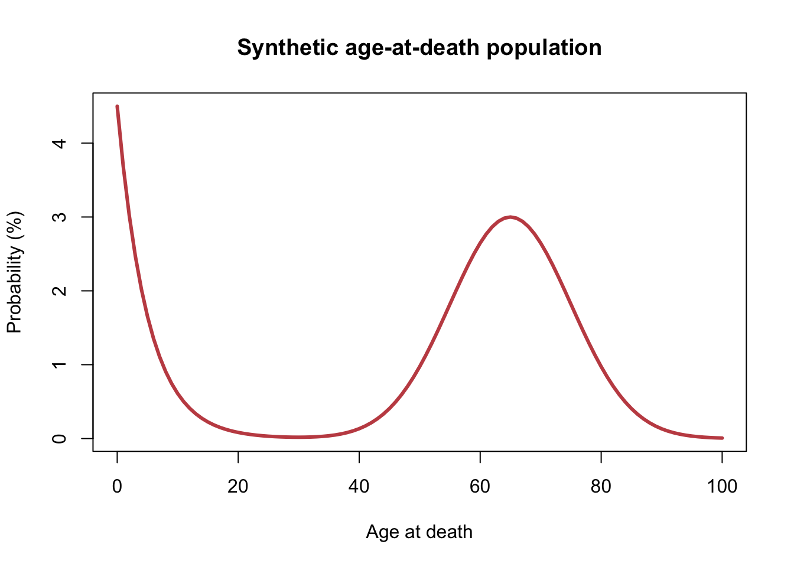

How does an irregular, bimodal-looking synthetic population behave after averaging?
2 Population / Process and Theory
The instructor construction uses ages 0 through 100 with weights 0.045 * exp(-x/5) + 0.030 * exp(-0.5 * ((x - 65) / 10)^2), normalized to probabilities. The supplied rdeath() logic samples from those probabilities. The resulting distribution is synthetic, not historical mortality data; its mean and SD are computed from the normalized table.
3 CLT Assumptions and Prediction
The draws are iid with finite variance. The unusual shape may make small-n sampling distributions depart from normality even though ordinary CLT conditions hold. I expect sample means to smooth the irregular population as n increases.
4 Original Population and Simulation Evidence
Code
distribution <-age_at_death_distribution()plot(distribution$age, distribution$percent, type ="l", lwd =3,col ="#C44E52", xlab ="Age at death", ylab ="Probability (%)",main ="Synthetic age-at-death population")

Code
if (is.null(rows) ||nrow(rows) ==0L) {cat("Run scripts/run_project.R after entering student_seed.\n")} else {print(rows)}
theoretical/reference SE: 1.5955 Evidence decision: The synthetic irregular mixture becomes stable by about n = 300, with near-zero shape diagnostics and empirical/theoretical SE agreement.
The selected value reflects the synthetic two-component discrete mixture supplied by the instructor. It is not historical mortality data; the irregular source shape is exactly what makes the fast stabilization of the sample mean worth checking.
Source Code
---title: "08 · Extra Credit: Synthetic Age-at-Death"subtitle: "An irregular discrete mixture with early and late peaks"---```{r}root <-if (file.exists("R/config.R")) "."else".."source(file.path(root, "R/config.R")); source(file.path(root, "R/distributions.R"))source(file.path(root, "R/diagnostics.R")); source(file.path(root, "R/simulate_means.R"))source(file.path(root, "R/plotting.R")); source(file.path(root, "R/report_helpers.R"))spec <-population_spec("age_at_death"); rows <-population_rows(spec$id)```## Research QuestionHow does an irregular, bimodal-looking synthetic population behave after averaging?## Population / Process and TheoryThe instructor construction uses ages 0 through 100 with weights `0.045 * exp(-x/5) + 0.030 * exp(-0.5 * ((x - 65) / 10)^2)`, normalized to probabilities. The supplied `rdeath()` logic samples from those probabilities. The resulting distribution is synthetic, not historical mortality data; its mean and SD are computed from the normalized table.## CLT Assumptions and PredictionThe draws are iid with finite variance. The unusual shape may make small-n sampling distributions depart from normality even though ordinary CLT conditions hold. I expect sample means to smooth the irregular population as `n` increases.## Original Population and Simulation Evidence```{r}distribution <-age_at_death_distribution()plot(distribution$age, distribution$percent, type ="l", lwd =3,col ="#C44E52", xlab ="Age at death", ylab ="Probability (%)",main ="Synthetic age-at-death population")``````{r}if (is.null(rows) ||nrow(rows) ==0L) {cat("Run scripts/run_project.R after entering student_seed.\n")} else {print(rows)}```## Final Selected N and Interpretation```{r, results='asis'}report_selection(spec$id)```The selected value reflects the synthetic two-component discrete mixture supplied by the instructor. It is not historical mortality data; the irregular source shape is exactly what makes the fast stabilization of the sample mean worth checking.